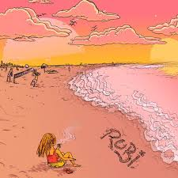
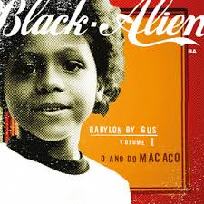
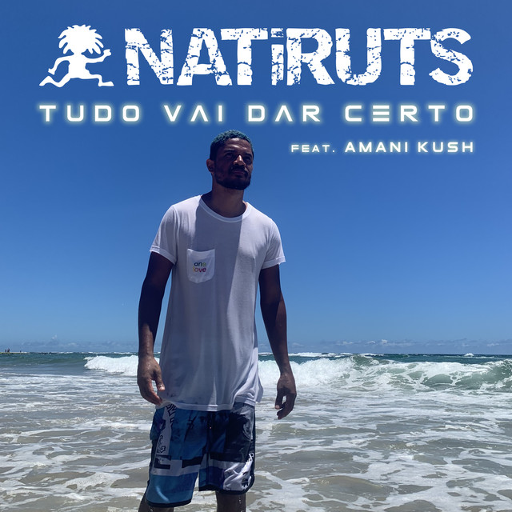

Trechos & Mensagens 🎶
músicas que me lembram você, com palavras minhas
Conseguiu arrancar palavras da minha boca,
apaixonates falas

Sem Graça
Haikaiss
♪
Mas quando penso em você,
a mão junta com a caneta
e a letra se escreve sozinha

Rubi
Andrade
♪
Uma parceira no crime, sim!
É o que eu sempre quis
Doce Veneno
Costa Gold
♪
De dormir juntinho, acordar abraçado
Agradecer ao te ver linda, ali bem do meu lado

Como Eu Te Quero
Black Alien
♪
Há uma luz que vem pra me dizer:
"Tudo vai dar certo"

Tudo Vai Dar Certo
Natiruts
♪
Hoje estou feliz porque sonhei com você
E amanhã posso chorar
Por não poder te ver

Dias De Luta, Dias De Glória
Charlie Brown Jr.